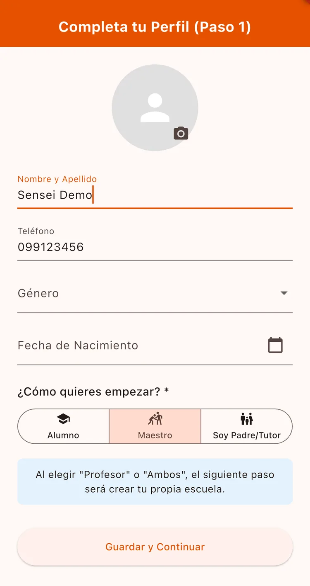
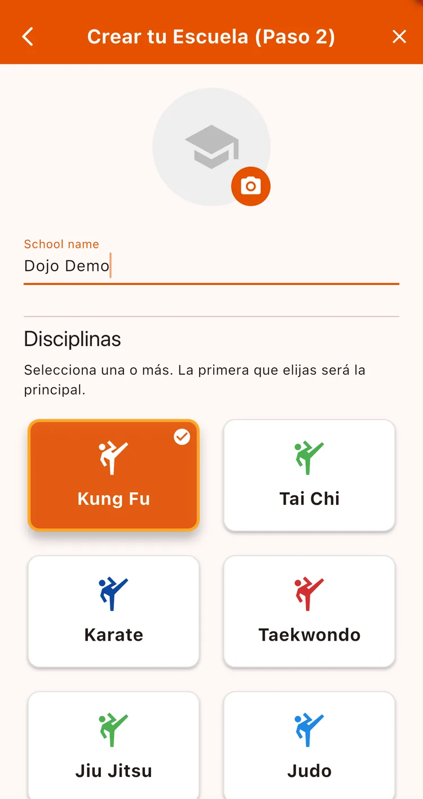
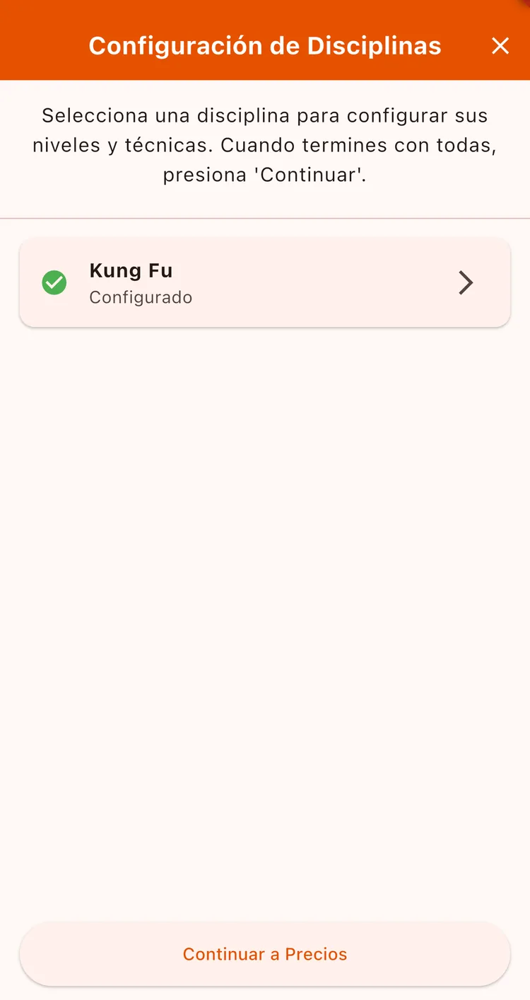
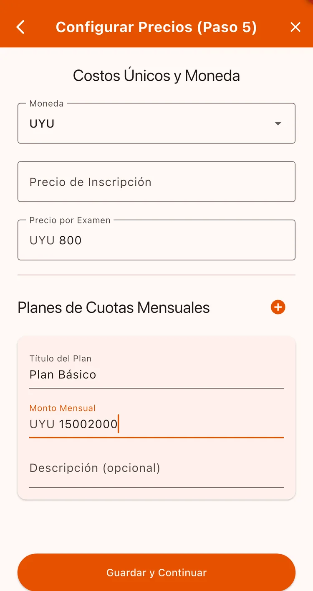
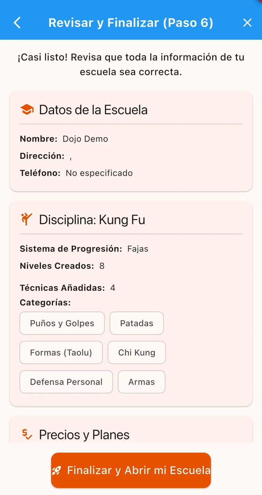

¿Para qué sirve?
Es el primer paso y el que define todo lo demás. Al crear la escuela elegís qué artes marciales enseñás, y eso determina los niveles, las técnicas y hasta los colores que va a usar la app. Toma unos 10 minutos y se hace una sola vez.
Antes de empezar
- Tener la app instalada y una cuenta creada (con Google, Apple o tu correo).
Paso a paso
Completá tu perfil personal
Después de crear tu cuenta, la app te pide tus datos: Nombre completo, teléfono, género y fecha de nacimiento. Son los datos del maestro, no de la escuela.

Cargá los datos de la escuela
En Crear tu Escuela (Paso 2) va el Nombre de la escuela y elegís las disciplinas que enseñás. Tenés que seleccionar al menos una.
Más abajo hay un bloque opcional con dirección, ciudad, teléfono y descripción. Podés dejarlo vacío y completarlo después.

Configurá cada disciplina
Por cada arte marcial que elegiste vas a definir dos cosas: los niveles (cinturones o fajas) y las técnicas.
Buena noticia: la app ya te carga la plantilla de tu arte marcial, con los cinturones y las técnicas armados. Sólo tenés que revisarlos y ajustar lo que quieras cambiar.

Definí tus precios
En Configurar precios elegís la moneda y cargás el precio de inscripción, el de examen y los planes mensuales (por ejemplo: Básico, Intermedio, Avanzado).
Podés cambiarlos cuando quieras desde Gestión → Finanzas.

Revisá y finalizá
La última pantalla te muestra todo lo que cargaste para que lo confirmes. Al finalizar, tu escuela queda creada.

Después de crearla puede que veas una pantalla de espera en lugar del panel. Es normal: las escuelas nuevas se validan o funcionan con el período de prueba. Si te quedaste esperando más de lo razonable, escribinos.
Todo lo que cargues en el alta se puede editar después. Lo importante es arrancar; los detalles los vas puliendo con la escuela ya andando.